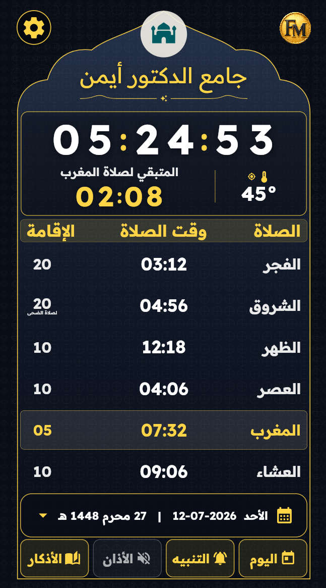
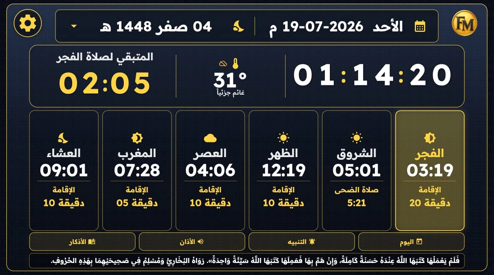

🕌
الصلاة والإقامة
عرض مواقيت الصلوات وأوقات الإقامة بصورة واضحة.
عرض أوقات الصلاة والإقامة والوقت المتبقي، مع الوضعين العمودي والأفقي، الأذان، التنبيهات، درجة الحرارة، وملفات المواقيت والصور المخصصة.

واجهة واضحة وإعدادات مرنة وملفات محلية مخصصة.
عرض مواقيت الصلوات وأوقات الإقامة بصورة واضحة.
عداد ثابت يوضح الوقت المتبقي للصلاة أو الإقامة.
اختيار ملفات أذان ومنبه بصيغة MP3.
تحميل مواقيت الصلاة من ملف CSV مطابق للنموذج.
صور PNG مستقلة للوضع العمودي والأفقي.
إظهار درجة الحرارة حسب الموقع عند منح الإذن.
دعم الواجهة العمودية والأفقية والتدوير التلقائي.
اسم الجامع والألوان والتاريخ والتنبيهات والمزيد.

حمّل النسخة الرسمية بصيغة APK من GitHub Releases.